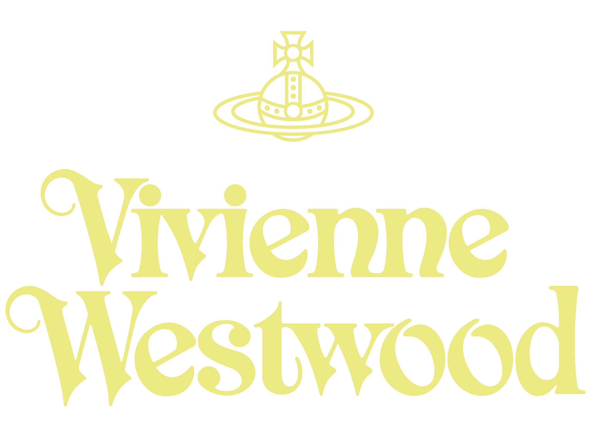
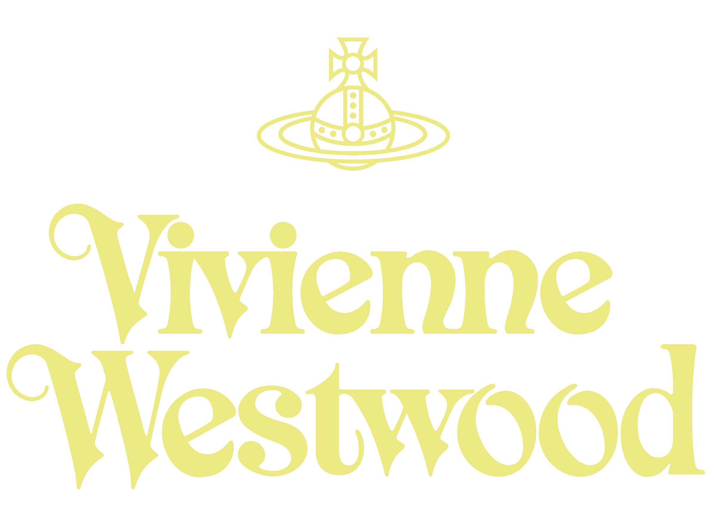

Dame Vivienne Isabel Westwood DBE RDI (née Swire; 8 April 1941 - 29 December 2022) was an English fashion designer and businesswoman, largely responsible for bringing modern punk and new wave fashions into the mainstream. In 2022, Sky Arts ranked her the 4th most influential artist in Britain of the last 50 years.
Westwood came to public notice when she made clothes for the boutique that she and Malcolm McLaren ran on King's Road, which became known as Sex. Their ability to synchronise clothing and music shaped the 1970s UK punk scene, which included McLaren's band, the Sex Pistols. She viewed punk as a way of "seeing if one could put a spoke in the system".
Westwood opened four shops in London and eventually expanded throughout Britain and the world, selling a varied range of merchandise, some of which promoted her political causes such as the Campaign for Nuclear Disarmament, climate change and civil rights groups.